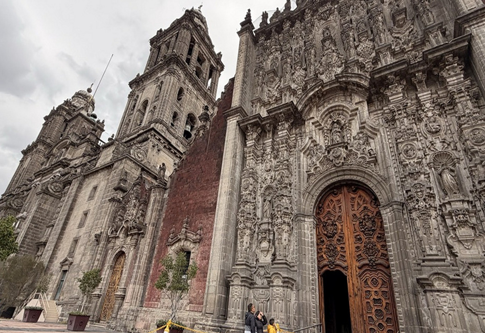
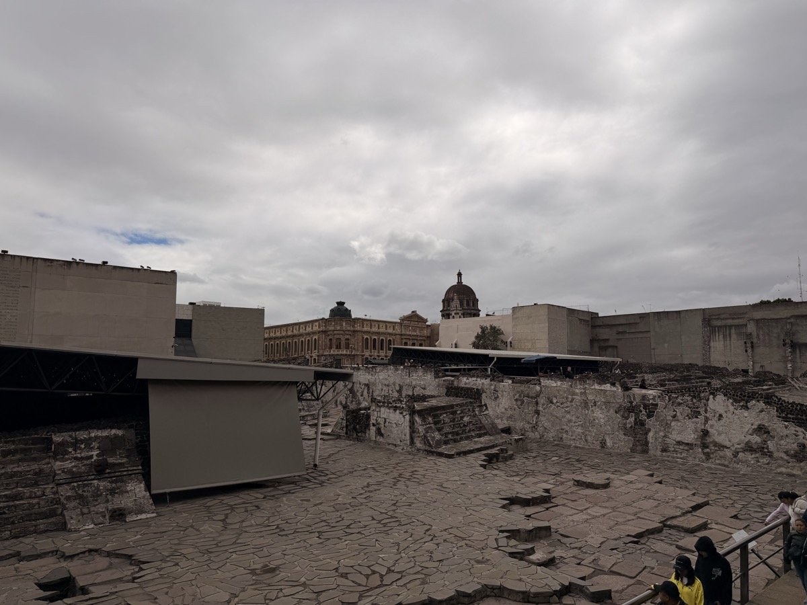
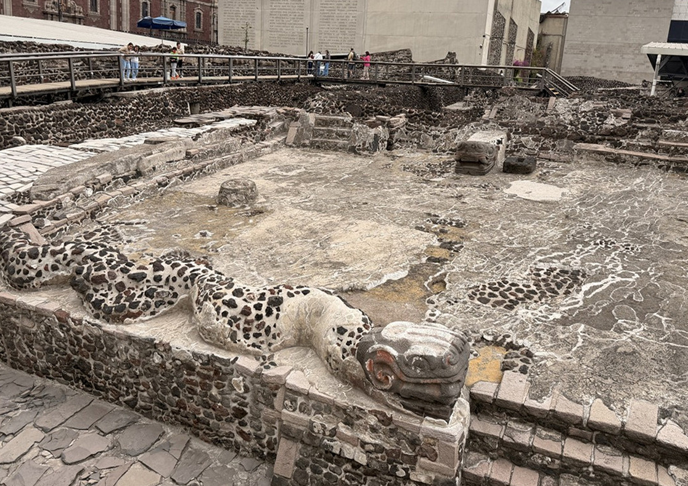
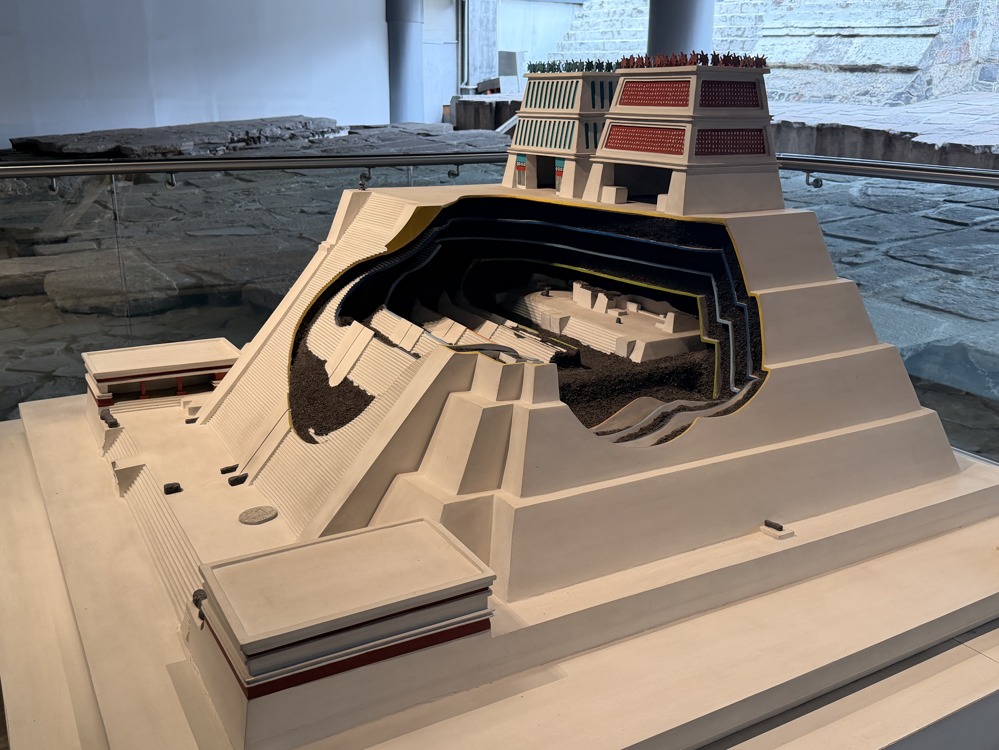
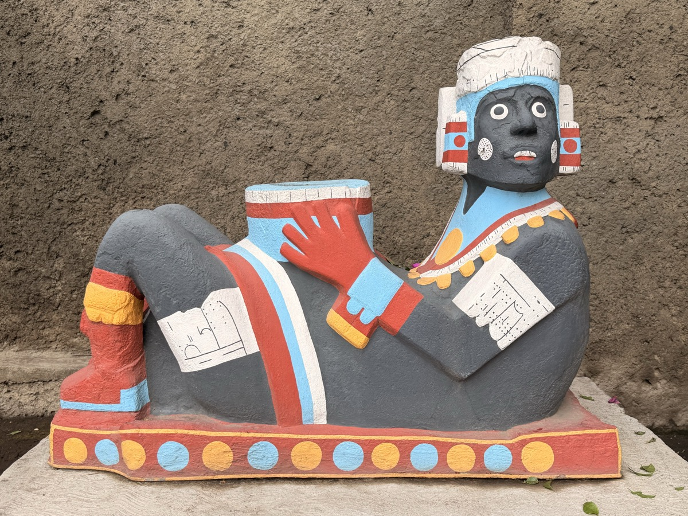
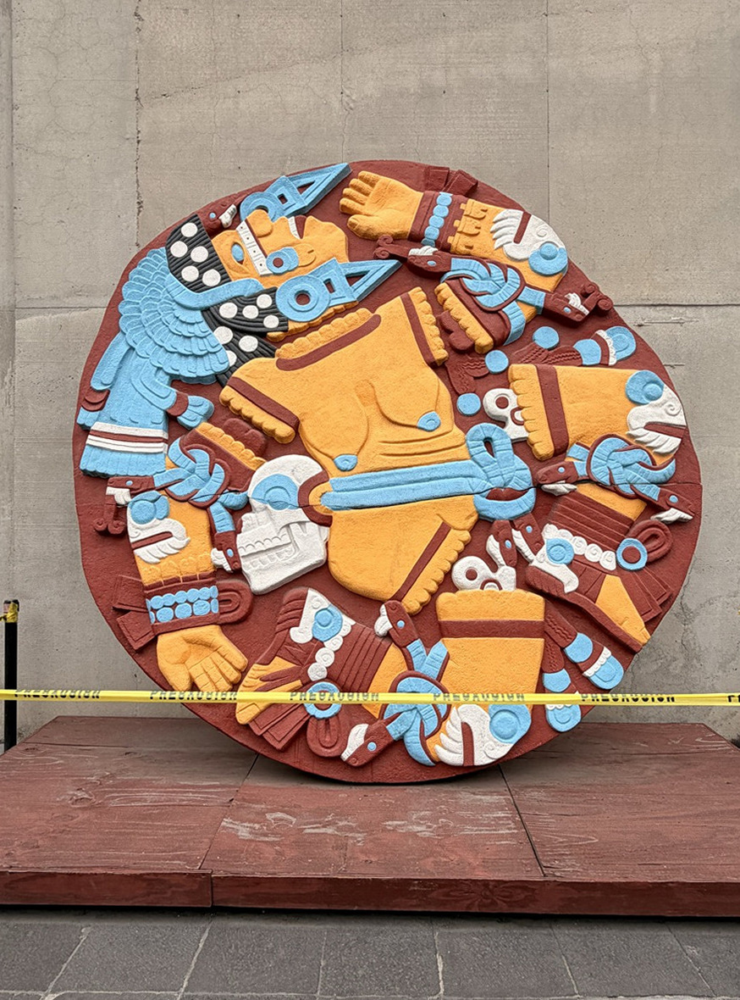
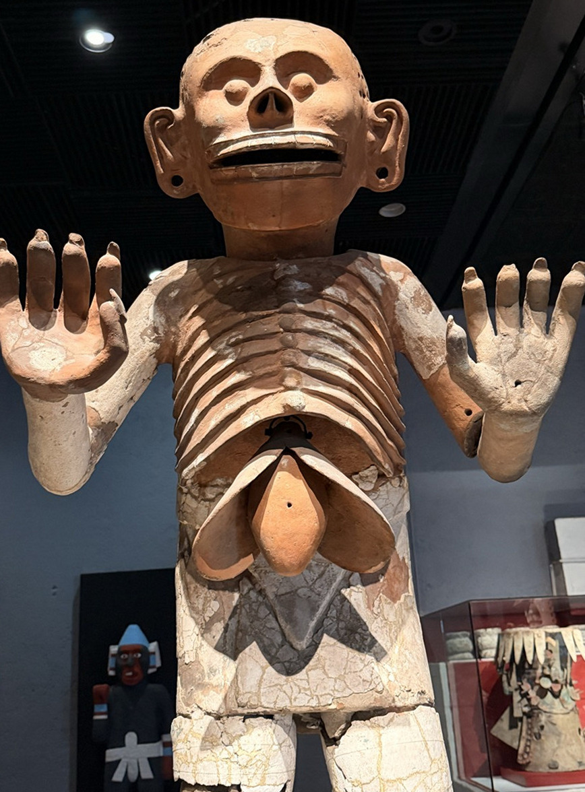
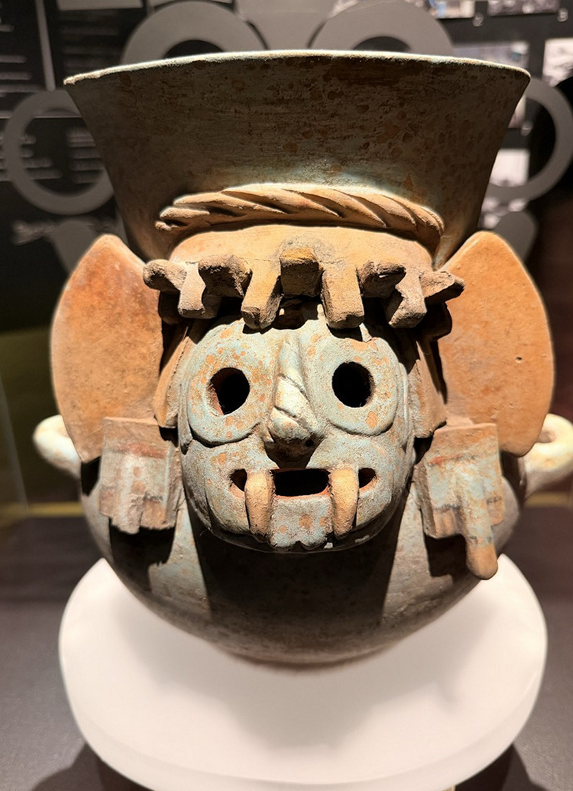
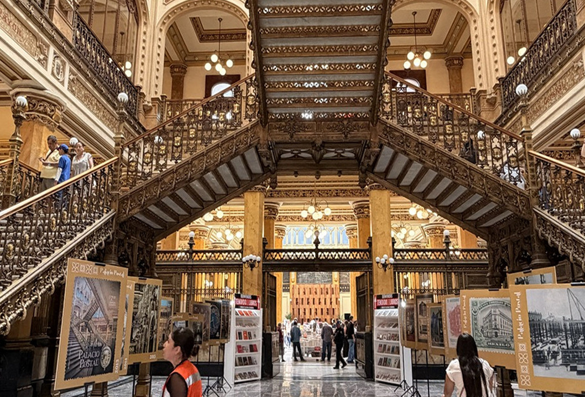

メキシコシティの中心、ソカロ（Plaza de la Constitución）。標高2,240mに広がるこの広場は、世界最大級の広場のひとつだ。四方をバロック建築の歴史的建造物に囲まれており、ここに立つだけでメキシコの重層的な歴史を肌で感じることができる。
メトロポリタン大聖堂
ソカロに面して建つメトロポリタン大聖堂（Catedral Metropolitana）は、1573年から約240年かけて建設された、ラテンアメリカ最大のカトリック聖堂だ。バロック、ルネサンス、新古典主義と複数の建築様式が折り重なった外観は、その長い建設期間の産物でもある。
地盤沈下のため建物全体が傾いており、内部に入ると床の微妙な傾きが確かに感じられる。それもまた、この都市の地層の歴史——かつてアステカの都テノチティトランが存在し、その上にスペインが植民地都市を建設したという事実——を物語っている。

テンプロ・マヨール——アステカの中心神殿
大聖堂のすぐ隣に位置するテンプロ・マヨールは、14世紀に栄えたアステカ帝国の首都テノチティトランの中枢だった神殿だ。スペインの征服後、神殿は破壊され、その石材はそのまま大聖堂の建設に流用された。1978年に地下工事中に偶然発見されるまで、その存在は長らく地下に眠っていた。


併設のテンプロ・マヨール博物館には、発掘された膨大な数の出土品が展示されている。アステカの世界観を凝縮した彫刻群は圧巻だ。神殿の断面模型を見ると、建設と改築が重ねられた構造がよくわかる。





パラシオ・ポスタル——隠れた名建築
テンプロ・マヨールから徒歩5分ほどのところにあるパラシオ・ポスタル（Palacio Postal）は、1907年完成のアール・ヌーヴォー様式の郵便局だ。イタリア人建築家アダモ・ボアリの設計で、現役の郵便局として機能しながら、内部はまるでヨーロッパの宮殿のような装飾が施されている。通常は無料で見学でき、建物内部にも入れる（見学範囲やツアーにより異なる場合あり）。
隣のパラシオ・デ・ベジャス・アルテス（国立芸術宮殿）とともに、ピクサー映画『リメンバー・ミー』のビジュアルにインスピレーションを与えたといわれている建築群のひとつだ。映画を見た人は、見覚えのある装飾に気づくかもしれない。

ソカロ周辺は「層」を意識しながら歩くと面白い。アステカの石の上にスペインの大聖堂が建ち、その隣に19世紀のアール・ヌーヴォー建築がある。メキシコシティという都市はそのまま歴史の断面図だ。